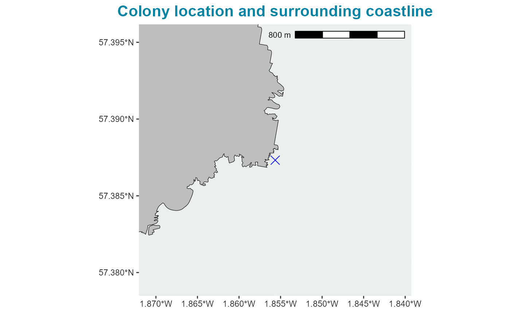
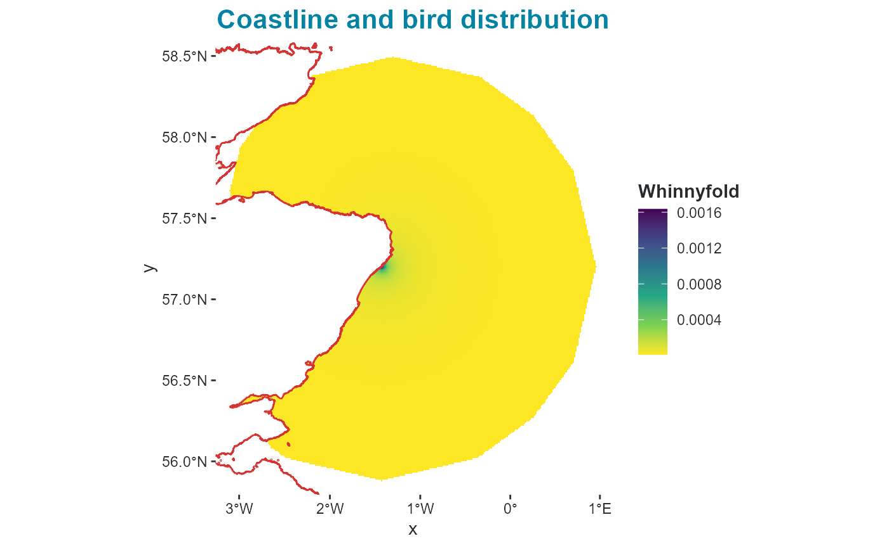
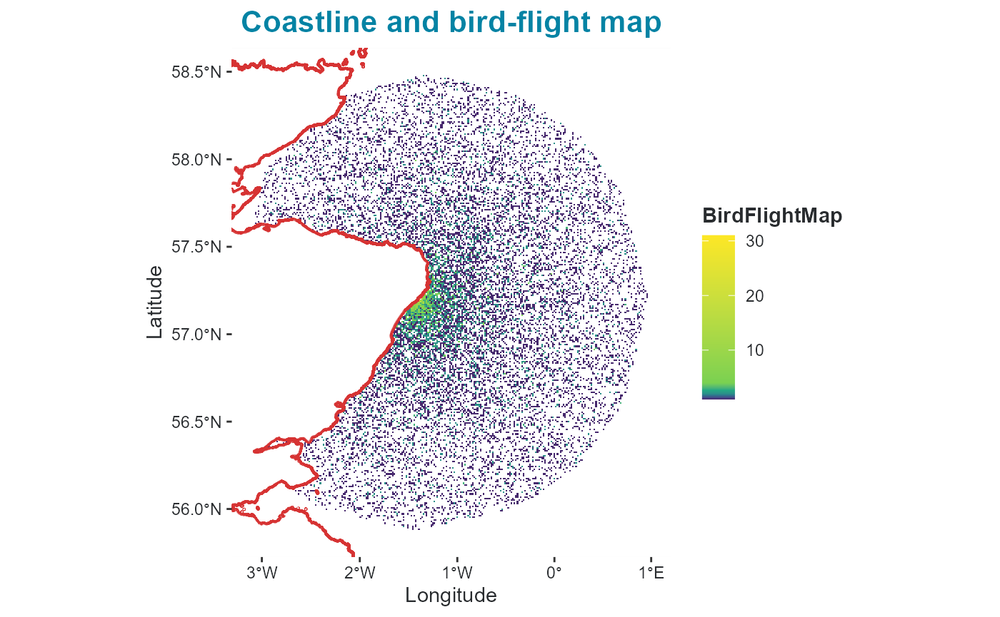
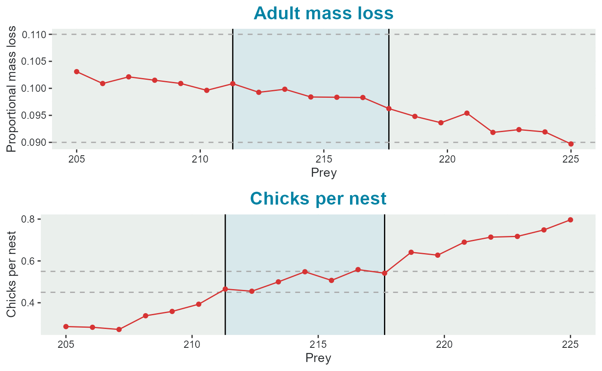

Load the seabORD package before running the examples below. If you have not yet installed the package, please follow the Installing seabORD instructions first.
Introduction & background
In this example, we simulate the potential impacts of three offshore renewable developments (ORDs), Hywind Scotland Pilot Park, Aberdeen Offshore Wind Farm, and Kincardine, on a kittiwake colony located at Whinnyfold within the Buchan Ness to Collieston Coast SPA (UK9002491). Bird distribution is represented using density maps generated from a distance-decay function. If you are unfamiliar with this process, see the Creating Bird Density Maps Using a Distance-Decay Function example for a step-by-step guide.
The workflow consists of two main steps:
Model calibration – determine suitable prey density values by running baseline simulations without ORDs.
ORDs simulations – use the calibrated prey densities to assess the potential impacts of offshore renewable developments (ORDs) on adult and chick performance.
Case specific spatial inputs
Get the input parameters that you will use in the calibration and actual run (more information here).
spadat1_example <- seabORD::get_example_spadat1(type = "dd")
spadat2
spadat2_example <- seabORD::get_example_spadat2(type = "dd")spdat
These are Kittiwake specific parameters for this run
spdat_example <- seabORD::get_example_spdat()BrdData (created with a distance-decay function)
See the step-by-step guide Create a distance-decay map to see how this was created.
brddata_example <- seabORD::get_example_brddata(type = "dd")
FlightGridcorrection
FlightGridcorrection_example <- seabORD::get_example_fgc_3035()Step 1: Calibrating prey density
A key component of the seabORD model is the need to calibrate the prey level inputs used for each new species and colony combination. This involves re-running the model without ORDs (baseline simulations) with a range of prey levels to ascertain the range of values within which the model returns adult mass and chick mortality rates consistent with pre-defined values representing “moderate” conditions (Figure 1). This is to allow simulation of the range of outcomes expected under these conditions, as the model is highly sensitive to the prey density parameter.
![Figure 1: Schematic plot of kittiwake adult mass loss (A) and chicks per nest (B) drawn from 300 baseline simulations (no ORD footprints) ranging from a prey value of 50 up to 250. The red lines are for smoothed model outputs, which are overlaid on grey points indicating the individual estimates. For calibration we have upper and lower bounds for each output (A & B) which are picked to reflect “moderate” conditions, i.e., what is observed in a typical year for kittiwakes at the Isle of May, and these are indicated by the dashed grey horizontal lines. The grey shaded blocks indicate where the respective outputs fall within these bounds, and the light blue shaded block indicates the prey values where there is overlap between the estimates, which is the prey range used in subsequent simulations with ORDs included.](images/Calibration_plot_schematic_extended_seabordpkg.png)
Parameter sets for the calibration run
Set the input parameter for the calibration run
Par
NOTE: “Nscalefactor” is set to 0.1 meaning we are running with 10% of the population, which may be sufficient for calibration runs.
Par_example_calibration <- seabORD::get_example_par(type = "cal_dd")
str(Par_example_calibration)
#> List of 12
#> $ thisSpecies : chr "KI"
#> $ colonies : chr "UK9002491"
#> $ Nscalefactor : num 0.1
#> $ Prob_Displacement : num 0.6
#> $ Prob_Barrier : num 1
#> $ PreyType : chr "Uniform"
#> $ collision : chr "Off"
#> $ SiteSelectionMethod: chr "Map"
#> $ MaxDistancekm : num 0
#> $ PropInRange : num 0
#> $ Npairspercol : num 1350
#> $ Pmedian : num [1:20] 205 206 207 208 209 ...modPar
modPar_example_calibration <- seabORD::get_example_modpar(type = "cal_dd")
str(modPar_example_calibration)
#> List of 5
#> $ Nparallel : logi NA
#> $ initialseed: num 6598
#> $ reference : chr "serial_calibration_KI_UK9002491"
#> $ outputdir : chr "output_seabORD"
#> $ Nreplicates: num 20Create the output folder, for example “output_seabORD_calibration” and assign it as output directory
#set the output location in ModPar
# specifically for calibration outputs if it doesn't alreay exist
if (!dir.exists("output_seabORD_calibration")) {
dir.create("output_seabORD_calibration")
}
modPar_example_calibration$outputdir <- "output_seabORD_calibration"NOTE: Run this test! Here is where our 20 replicates are specified - this must align with the number of prey values listed in “Par_example$Pmedian”
# Lets run a test to that effect:
seabORD::check_calibration_inputs(
Par = Par_example_calibration,
modPar = modPar_example_calibration
)
#> Calibration inputs valid: 20 replicate(s) and 20 prey value(s).ordPar
ordPar should be empty, as we are only running baseline simulations with no ORDs.
ordPar_example_calibration <- seabORD::get_example_ordPar("cal_dd")
str(ordPar_example_calibration)
#> list()Switches
Turn on the switch “savebirdflightmap”, to see an example of the birdflightmap output
#get the switches
switches_example_calibration <- seabORD::get_example_switches("cal_dd")
#turn on savebirdflightmap
switches_example_calibration$savebirdflightmap <- TRUE
str(switches_example_calibration)
#> List of 14
#> $ environment : chr "serial"
#> $ modelmode : chr "calibration"
#> $ debugmode : num 0
#> $ bycol : logi FALSE
#> $ bysus : logi FALSE
#> $ bych : logi FALSE
#> $ printdaily : logi FALSE
#> $ printseason : logi FALSE
#> $ printpair : logi FALSE
#> $ printfinal : logi FALSE
#> $ minout : logi FALSE
#> $ silent : logi FALSE
#> $ saverds : logi TRUE
#> $ savebirdflightmap: logi TRUESet off calibration runs
Now that the inputs have been prepared by loading them into our environment we can set off the run using the following code. You can also use the example output.
The ORDpoly is set to NULL in the calibration run, as this is not needed.
Calculates (Slow, ~45 minutes): This will start the calibration runs (30 steps per 20 days).
sbordout_calibration <- seabORD::seabord(
Par = Par_example_calibration,
ordPar = ordPar_example_calibration,
modPar = modPar_example_calibration,
switches = switches_example_calibration,
seamask = seamask_example,
spadat1 = spadat1_example,
spadat2 = spadat2_example,
spdat = spdat_example,
BrdData = brddata_example,
FrgCompData = FrgCompData_example,
fltdist_base = fltdist_base_example,
FlightGridcorrection = FlightGridcorrection_example,
ORDpoly = NULL
)Load example calibration output (used throughout this vignette)
sbordout_calibration <- seabORD::get_example_output(type = "cal_dd")Plot the outputs and determine prey values
For this particular example we define moderate conditions for kittiwakes on the Isle of May against the two following outputs:
| Output | Moderate value | Upper bound (+10%) | Lower bound (-10%) |
|---|---|---|---|
| Adult mass loss | 10% | 11% | 9% |
| Chicks per nest | 50% | 55% | 45% |
Where adult mass loss is the average percentage mass loss of adults over the duration of the chick-rearing season being simulated, and chicks per nest is the average number of chicks surviving per nest. The aim of calibration is to find the shared prey values contained within the upper and lower bounds between each output.
seabORD::plot_BirdFlightMap(
sbordout_calibration
)
#> Warning in regularize.values(x, y, ties, missing(ties), na.rm = na.rm):
#> collapsing to unique 'x' values
#> Warning in regularize.values(x, y, ties, missing(ties), na.rm = na.rm):
#> collapsing to unique 'x' values
#> Warning in regularize.values(x, y, ties, missing(ties), na.rm = na.rm):
#> collapsing to unique 'x' values
You can see from this map that there is no evidence of any ORD interactions, which is reassuring!
Now we will plot the adult outputs (sbordout$output_a0) and the chick outputs (sbordout$output_c0) against the range of prey values across replicates to obtain our calibrated estimates to be used in the scenario runs going forward.
# Identify prey values that simultaneously satisfy
# the adult mass loss and productivity constraints
calibration <- seabORD::calc_calibration_range(
sbordout_calibration,
masslower = 0.09,
massupper = 0.11,
prodlower = 0.45,
produpper = 0.55
)
#plot it
seabORD::plot_calibration_outputs(
sbordout_calibration,
calibration = calibration,
masslower = 0.09,
massupper = 0.11,
prodlower = 0.45,
produpper = 0.55
)
Step 2: Running the model
Now that we have run our calibration step and discerned the prey values resulting in moderate conditions in the absence of wind farms, we can continue with running the main seabORD runs with matched pairs of baseline (no ORDs) and scenario (ORDs included).
In this example we will run 1 scenario run (wind farm footprints included) with a prey value of 174, the upper end of the calibrated range.
Parameter sets for the scenario run
Par
NOTE: “NScalefactor” is set to 1 meaning we are running with 100% of the population, which is customary for scenario runs.
Par_example <- seabORD::get_example_par(type = "dd")
str(Par_example)
#> List of 12
#> $ thisSpecies : chr "KI"
#> $ colonies : chr "UK9002491"
#> $ Nscalefactor : num 1
#> $ Prob_Displacement : num 0.6
#> $ Prob_Barrier : num 1
#> $ PreyType : chr "Uniform"
#> $ collision : chr "Off"
#> $ SiteSelectionMethod: chr "Map"
#> $ MaxDistancekm : num 0
#> $ PropInRange : num 0
#> $ Npairspercol : num 2898
#> $ Pmedian : num 200modPar
modPar_example <- seabORD::get_example_modpar(type = "dd")
str(modPar_example)
#> List of 5
#> $ Nparallel : logi NA
#> $ initialseed: num 6598
#> $ reference : chr "serial_scenario_KI_UK9002491"
#> $ outputdir : chr "output_seabORD"
#> $ Nreplicates: num 1Create the output folder, for example “output_seabORD_scenario” and assign it
# set the output location in ModPar
# This is just an example, you can place the output in any directory.
if (!dir.exists("./output_seabORD_scenario")) {
dir.create("./output_seabORD_scenario")
}
modPar_example$outputdir <- "output_seabORD_scenario"To keep this example quick, we run a single replicate, so we set this in modPar.
modPar_example$Nreplicates <- 1Include the calibration in Par
NOTE: Run this test! Here the replicates are specified - this must align with the number of prey values listed in “Par_example$Pmedian”
seabORD::check_calibration_inputs(
Par = Par_example,
modPar = modPar_example
)
#> Calibration inputs valid: 1 replicate(s) and 1 prey value(s).Using the calibrated values, update Par with the built-in function.
Check the pre-set value, and change it based on the calibration values.
str(Par_example$Pmedian)
#> num 200Change it:
# min prey value from range determined in calibration
Pmin <- 173
# max prey value from range determined in calibration
Pmax <- 174
Par_example <- seabORD::set_prey_sequence_in_par(
Par = Par_example,
modPar = modPar_example,
Pmin = Pmin,
Pmax = Pmax
)
str(Par_example$Pmedian) #should be good to go!
#> num 174ordPar
ordPar_example <- seabORD::get_example_ordPar(type = "dd")
str(ordPar_example) # Including wind farms Nearth na Goithe and Inch Cape
#> List of 4
#> $ include_ORDs : chr [1:3] "Hywind Scotland Pilot Park" "Aberdeen Offshore W/F" "Kincardine"
#> $ parnames : chr "HYWD;ABDN;KINC"
#> $ FootprintBorder: num 2
#> $ BufferZone : num 5Switches
Turn on the switch “savebirdflightmap”, to see an example of the birdflightmap output. Turn on “saverds” to save the outputs as rds.
switches_example <- seabORD::get_example_switches(type = "dd")
switches_example$savebirdflightmap <- TRUE
switches_example$saverds <- TRUE
str(switches_example)
#> List of 14
#> $ environment : chr "serial"
#> $ modelmode : chr "scenario"
#> $ debugmode : num 0
#> $ bycol : logi FALSE
#> $ bysus : logi FALSE
#> $ bych : logi FALSE
#> $ printdaily : logi FALSE
#> $ printseason : logi FALSE
#> $ printpair : logi FALSE
#> $ printfinal : logi FALSE
#> $ minout : logi FALSE
#> $ silent : logi FALSE
#> $ saverds : logi TRUE
#> $ savebirdflightmap: logi TRUESet off the scenario runs
Now that all the inputs are ready we can run the model. seabORD runs including wind farms and full populations can take a while to run - even with a relatively small population of ~3,000 pairs. To learn more about the main functions behind seabORD you can read the article on the main functions.
The output will be saved in your output directory set up in modPar.
SeabORDoutput <- seabord(Par = Par_example,
ordPar = ordPar_example,
modPar = modPar_example,
switches = switches_example,
seamask = seamask_example,
spadat1 = spadat1_example,
spadat2 = spadat2_example,
spdat = spdat_example,
BrdData = BrdData_example,
FrgCompData = FrgCompData_example,
fltdist_base = fltdist_base_example,
FlightGridcorrection = FlightGridcorrection,
ORDpoly = ORDpoly_example)To learn more about how to interpret the output you can read the article on the output interpretation.